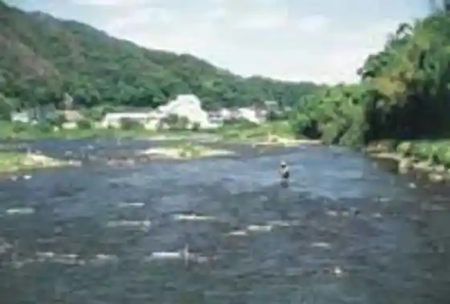
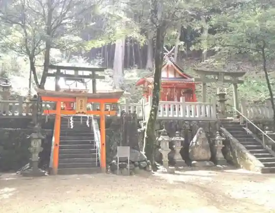
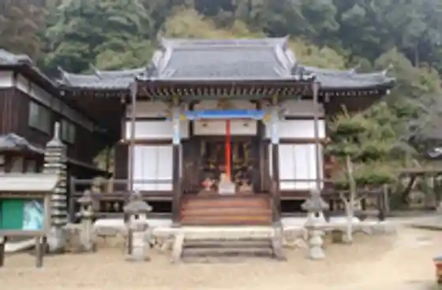

Japan / Kyoto / Minamiyamashiro
Minamiyamashiro, Kyoto
Minamiyamashiro · Kyoto
Minamiyamashiro
Highlighted on the Kyoto map.
Sights
Kozan Dam
Kizugawa no Uotsuri Ri

Koi Shitani Shrine

Shunko Tera

Yume Gen Kyo (Yumigafuchi)
Yamanami Horu
Tayama Shogaigakushu Center (Kyu Tayama Shogakko)